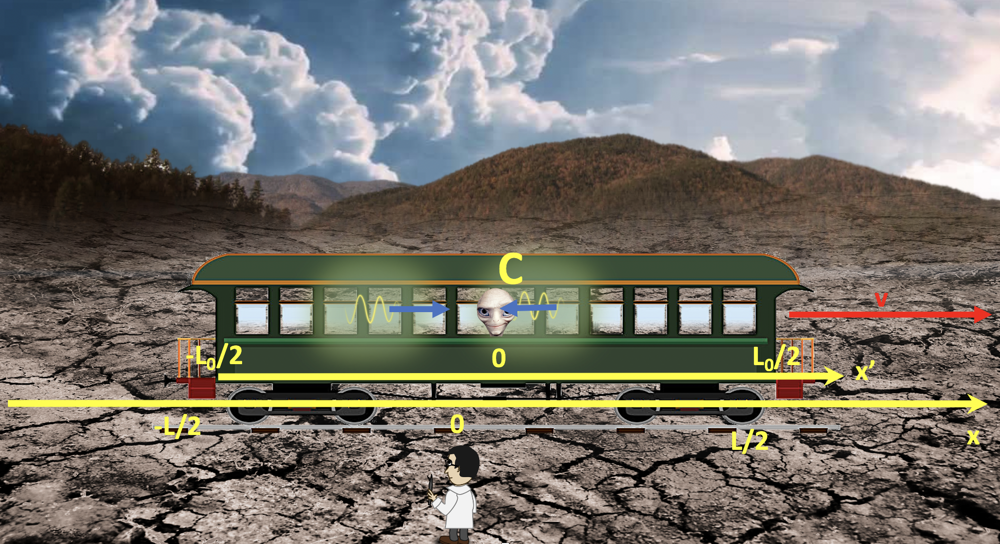

Forrige side🙂 🙁Eksempel 2PADLET

La oss nå finne den 3. likningen vår ved å bruke avstanden mellom eventene C og P (P er et veldig praktisk event å bruke siden alt er 0 og vi får finere likninger), sett opp invarians av tidromsintervallet og se om du kan komme frem til at: $$\frac{(L/2)^2}{(1+v)^2}(1-v^2)=(t_A'+L_0/2)^2$$ Som er den siste av de tre likningene vi trenger. Fikk du det ikke til, ta en titt på denne videoen
.